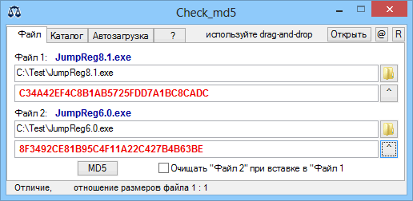

Check_md5
Назначение
Сравнение двух файлов, является ли они точной копией друг-друга.

Утилита для проверки контрольных сумм. Тестирован на WindowsXP SP3.
Цель утилиты - проверка контрольных сумм (MD5) exe-файлов для контроля целостности оригинала в случае подозрения заражения вирусами.
Вкладка "Файл" - для сравнения двух файлов или md5.
Вкладка "Каталог" - для проверки целостности множества файлов. Первоначально выбранный тип или группы типов файлов сканируются в файл-базу. Впоследствии выполняется проверка целостности с файлом базы. Результат операции - три списка: совпадающих, не совпадающих и отсутствующих файлов. Если оставить поле "Тип файла" пустым, то сканируются все файлы. Если не хотите перезаписать файл базы, оставляете поле "файл-базы" пустым. Если оставить поле каталога пустым, то путь проверки читается в файл-базе, а если указать каталог, то это даст возможность сравнить с другими каталогами, например с бэкапом. Выходные лог-файлы генерируются с новыми индексами в именах. Esc - выход.
Вкладка "Автозагрузка" - для проверки файлов находящихся в автозагрузке и системных при каждой автозагрузке Windows. Режим является тихим, при совпадении контрольных сумм программа завершает свою работу. Если контрольные суммы не соответствуют, то программы выдаёт сообщение и дописывает запись в log-файл.